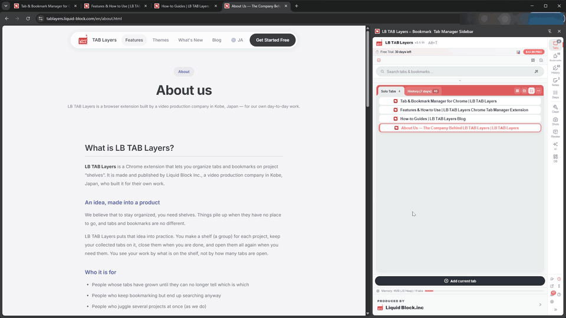
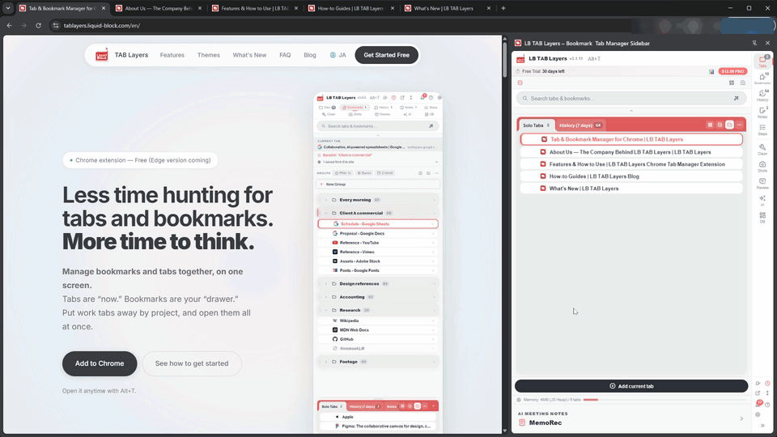
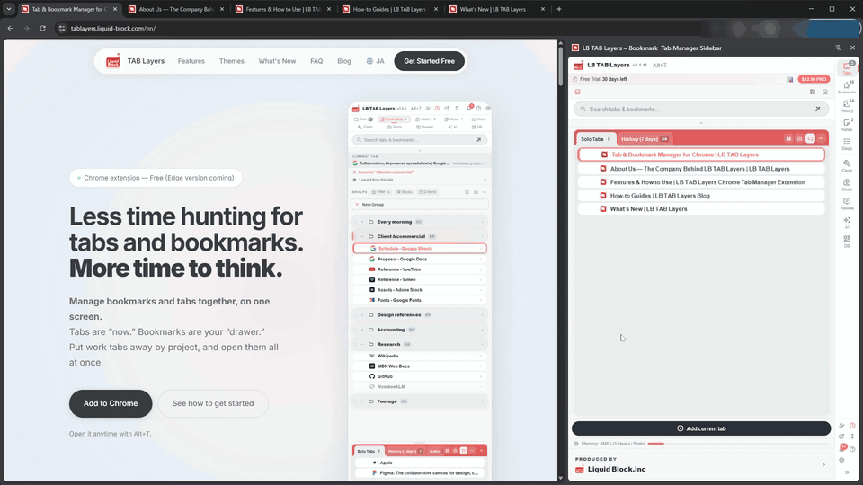
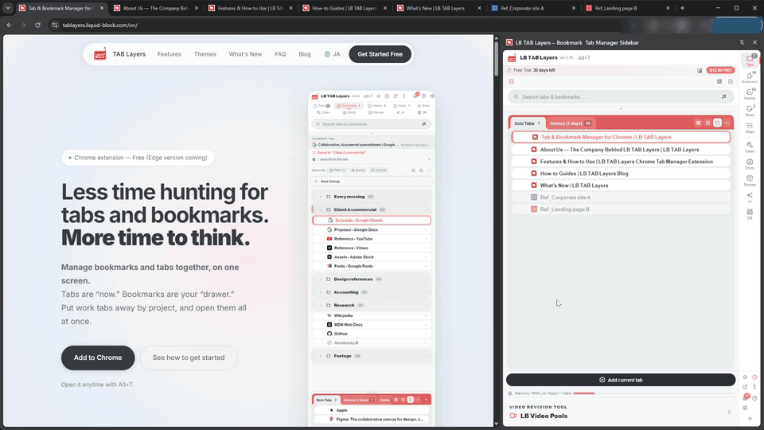
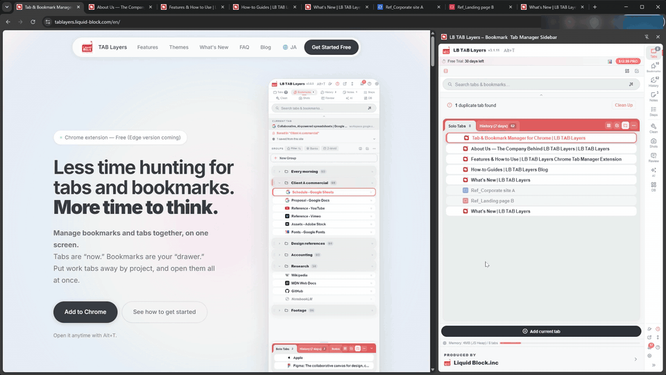
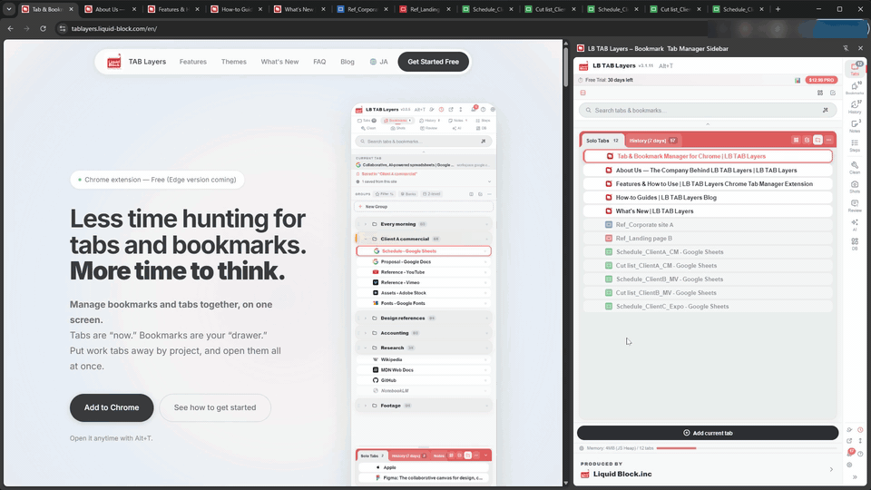

For people whose tabs pass 20, and anyone who does a lot of research.
List of open tabs
Lists the tabs in the current window, top to bottom. Saved ones appear dimmed
Where: The Tabs view
The Tabs view lists the tabs open in the current window. Click a row to switch to that tab, or click × to close it. Tabs you've already saved to a group appear dimmed.
Your open tabs, in a vertical list. Click to switch. Click × to close.
Switch to or close a tab
Click a row to go to that tab. Click × to close it
Where: A tab row
Click a tab row to switch to that tab. Click the × on the row to close it.
Tab preview PRO
Hover over a row to see a card with the title, site and a picture of the page
Where: A tab row
Hover over the row of an open tab to see a card with its title, site and a picture of the page. The picture appears when Settings › Privacy › Thumbnails is on. Pictures are never taken on sites such as email or banking. PRO feature (available during the free trial).

Just hover to check what's inside.
Reorder tabs
Drag a row and the browser's tab order changes too
Where: A tab row
Drag a row in the Tabs view and the tabs in your browser move to match.
Drag to reorder, and the browser's tab order follows.
Thumbnail view
See your open tabs as a grid of page pictures
Where: Top of the Tabs view
Click “Show as thumbnails” at the top of the Tabs view to see your open tabs as a grid of page pictures. If thumbnails are turned off, you'll be shown how to turn them on.
Group all into a new group
Put every unsaved tab into a group in one go
Where: Top of the Tabs view
Click “Group all into a new group” at the top of the Tabs view to put all your unsaved tabs into one group. Pick a name, description, color and icon, then click “Create”. Groups are saved as folders in Chrome's bookmarks.

When tabs pile up, put them all away in one group. Just pick a name and a color.
Pick only the tabs you want, then send them to a group
Where: Top of the Tabs view
Click “Select tabs to put into a folder” to enter select mode. Click the tabs you want, then choose a destination from “To group”.

You can also pick just the tabs you want and send them to a group.
Auto Group by Domain
Create groups automatically, one per site
Where: “…” in the Tabs view
Choose “Auto Group by Domain” from “…” in the Tabs view to sort your unsaved tabs into groups by site. The free plan allows up to 5 groups.

Tabs you haven't put away yet can be sorted into groups by site, automatically.
Close all tabs except the active one
Close every tab except the one you're viewing
Where: “…” in the Tabs view
Choose “Close the others” from “…” in the Tabs view to close every tab except the one you're viewing. There is no confirmation; they close right away. To be safe, save the tabs you want to keep to a group first.
Clean up duplicate tabs
Tells you when the same page is open twice, and closes the extras together
Where: A bar that appears automatically
When the same page is open in two or more tabs, a notice appears at the top of the panel. Click “Clean Up” to close the extra tabs. Tabs saved to a group are kept.

When the same page is open twice, you're told, and you can close the extras together.
Notice when you have many tabs
A reminder at 15 tabs, a warning at 100. You can change the numbers
Where: A bar that appears automatically / Settings › Behavior
You get a reminder at 15 tabs and a warning at 100. Change the numbers in Settings › Behavior › Notices. Click “Later” and it stays quiet for a while.

When tabs pile up, a notice appears. You can put them all away right from there.
Search
Find tabs, bookmarks and recently closed tabs from a single box
Where: Top of the panel / Ctrl+F
The search box at the top of the panel (Ctrl+F) searches open tabs, groups, bookmarks and recently closed tabs together. Separate words with a space to narrow the results to items that contain all of them. Japanese typed in hiragana or romaji matches too. Press Esc to clear.
Shows Google's search suggestions for what you type. Click one to search
Where: Below the search box
As you type in the search box, Google's search suggestions appear below. Click one to search for it. To show suggestions, the text you type is sent to Google.
History (1 week) PRO
Lists the pages you've visited, with date and time. Filter by day or time range and reopen them together
Where: The History view
Click “History” in the right rail to see the pages you've visited in the past week, day by day (open tabs are left out). Filter by day or time range, then use “Open these” to reopen them together. PRO feature (available during the free trial).
Now playing PRO
Shows tabs that are playing sound, and lets you play, pause, seek and change the volume from the panel. Can move to a small window
Where: Top of the panel (automatic)
When a tab is playing sound, a “Now playing” section appears at the top of the panel. Play, pause, seek and adjust the volume without leaving the panel. You can also move it to a small window. PRO feature (available during the free trial).